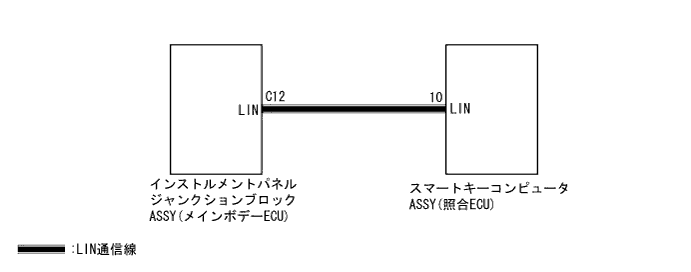
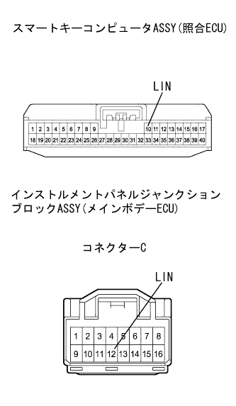

DTC B2287 LIN Communication Master Malfunction |
| DTC No. | DTC Detection Condition | Inspection Area |
|---|---|---|
| B2287 |
|
|

| Step 1 | Clear DTC |
Using SST (TaSCAN), clear the DTCs. (see)
| NEXT | |
| Step 2 | Check DTC |
Using SST (TaSCAN), check the DTCs of the smart key computer assembly (certification ECU) or instrument panel junction block assembly (main body ECU). (see)
| Result | Proceed to |
|---|---|
| Only DTC B2287 is output | A |
| DTCs B2785 and B2287 are output simultaneously | B |
|
| ||||
| A | |
| Step 3 | Inspect Wire Harness (Smart Key Computer Assembly - Instrument Panel Junction Block Assembly) |
 |
Disconnect the smart key computer assembly (certification ECU) connector and the instrument panel junction block assembly (main body ECU) connector C.
Using SST (Toyota electrical tester), measure the resistance between the terminals of the vehicle side wire harness connector.
| Inspection terminal (terminal symbol) (certification ECU - main body ECU) | Condition | Standard |
|---|---|---|
| 10(LIN) - C12(LIN) | Always | Below 1 Ω |
| Inspection terminal (terminal symbol) (main body ECU) | Condition | Standard |
|---|---|---|
| 10 (LIN) - Body ground | Always | 10k Ω or higher |
| Result | Proceed to |
|---|---|
| If wire harness inspection is NG | A |
| If current DTC and wire harness inspection is OK | B |
| If history DTC and wire harness inspection is OK | C |
|
| ||||
|
| ||||
| A | ||
| ||